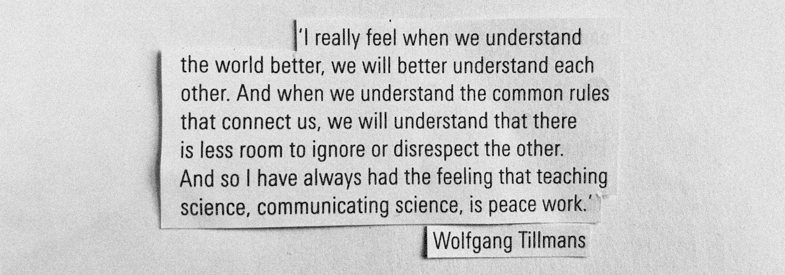
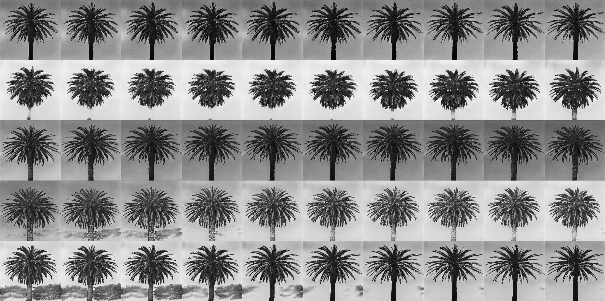
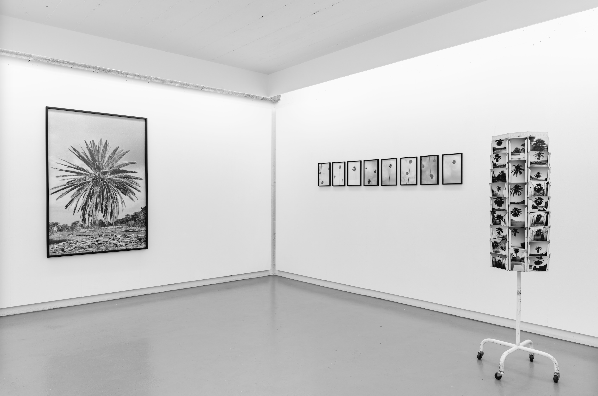
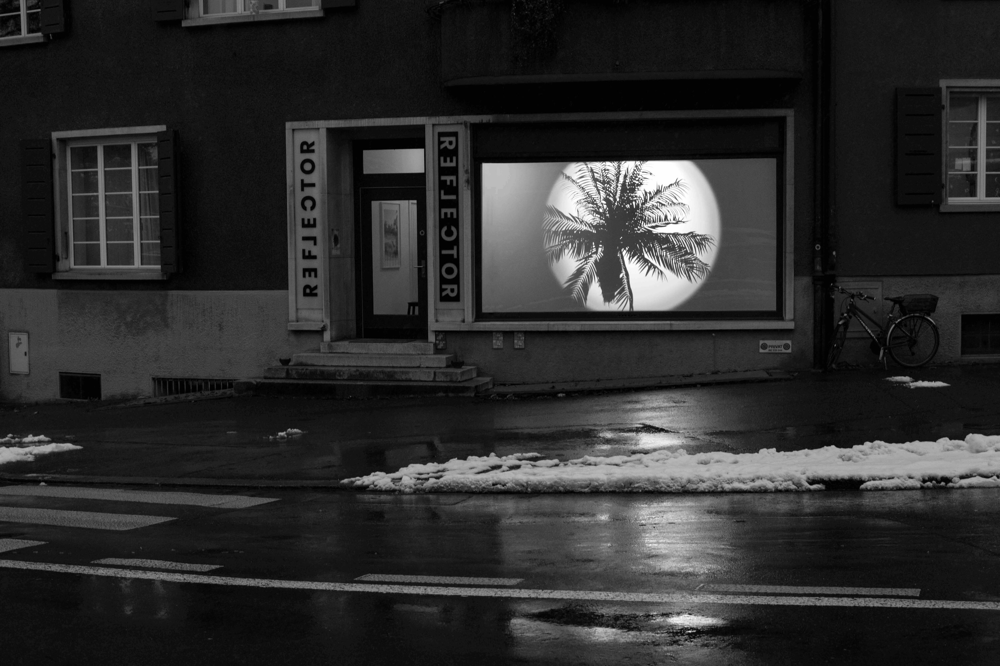
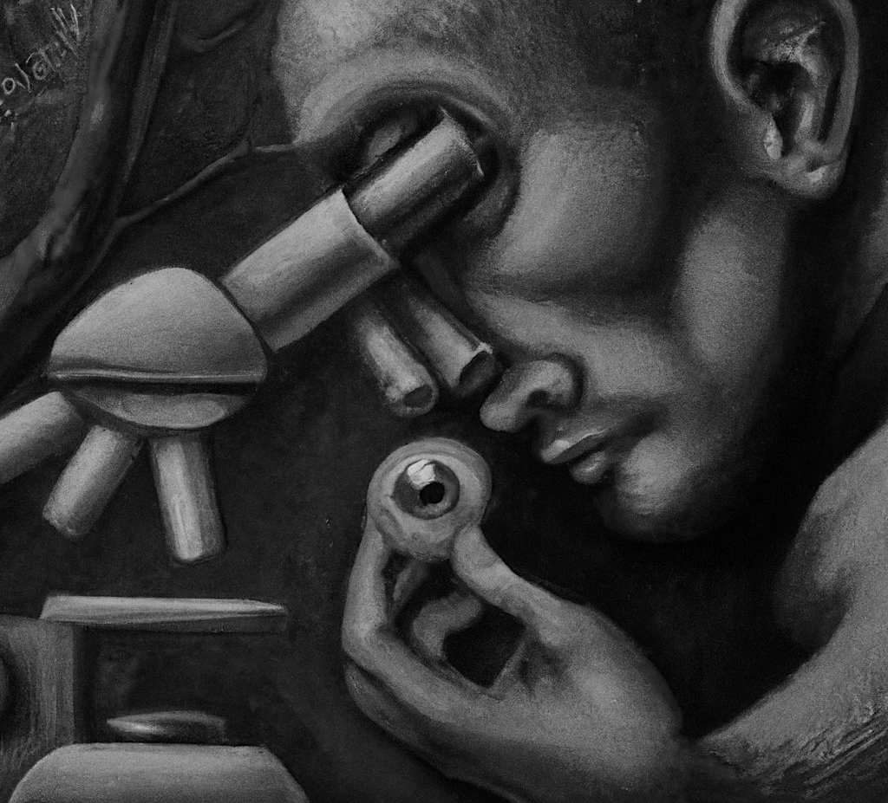

Lucien HinderlingTries to make microscopes smarter |
Hello! | github bsky twitter email | |
|---|---|---|---|
I’m a cell biologist with a background in computer science, developing real-time feedback control microscopy approaches at the University of Bern. Here’s a 3-min video or 40-min talk presenting my work.
During my PhD in Pertz Lab I built an experimental platform for closed-loop, feedback control microscopy. We primarily use the platform for optogenetic experiments, where we segment and track cells in real-time to automatically generate stimulation masks with sub-cellular precision. This technology allows us to manipulate cells with remarkable accuracy, and for example steer them around like tiny biologcial remote-controlled cars. We can control hundreds of cells simultaneously, enabling unprecedented experimental throughput (see preprint|code).
╭──────────────────────────────╮
│ User │
╰──────────────────────────────╯
↕ ↕ ↕
┌────────┐ ┌────────┐ ┌────────┐
│ GUI │ │ CODE │ │ LLM │
│ napari │ │ python │ │ │
└───┬────┘ └───┬────┘ └───┬────┘
┌───┴──────────┴──────────┴────┐
│ Microscope Control Software │
│ uManager/pymmcore │
└──────────────┬───────────────┘
┌──────────────┴───────────────┐
│ Microscope Hardware │
│ camera/stage/filters/DMD/... │
└──────────────────────────────┘
↕
╭──────────────────────────────╮
│ Live Cells │
│ biosensors/optogenetics │
╰──────────────────────────────╯
A current project explores how LLMs can interface between users and microscope hardware, to simplify the control of these complex machines and enable complex automation tasks that require reasoning on experimental output.
As member of the Smart Microscopy Working Group, I am interested to standardize adaptive feedback microscopy workflows, working with experts from academia and industry to create reference specifications for consistent implementation and reproducibility across imaging systems (see paper).
Passionate about all things bio-image analysis, I’m especially proud of Convpaint, an interactive pixel classification tool we developed. It uses pretrained ViTs to extract image features. With a simple GUI in napari, users can train an ML model in seconds to identify structures in cells and tissues, or even track animal behavior. Convpaint seamlessly handles multidimensional data (time-series, 3D, multichannel). Paper now out in Cell Reports Methods. Want to try it out? Either the docs or 2h video recording of a workshop (I2K conference) are good starting places.
Using diverse experimental approaches (fluorescent biosensors, optogenetics, microfabrication), I’m investigating cellular signaling dynamics, primarily at the subcellular scale. I’m fascinated by self-organizational properties at the interface between active matter and life.
| Year | Title | Links |
|---|---|---|
|
2025 1st |
Real-time feedback control microscopy for automation of
optogenetic targeting [bioRxiv] L Hinderling, AE Landolt, B Graedel, L Dubied, C Zahni, A Frismantiene, T Lambert, M Dobrzynski, O Pertz |
preprint code |
|
2026 1st |
Smart Microscopy: Current Implementations and a Roadmap for
Interoperability [Methods in Microscopy] L Hinderling, HS Heil, A Rates, P Seidel, M Gunkel, B Diederich, […], O Pertz, N Norlin, A Halavatyi, R Camacho |
paper press a press b website |
|
2025 1st |
Teach your microscope how to print: low-cost and rapid-iteration
microfabrication for biology [Lab on a Chip] L Hinderling, R Hadorn, M Kwasny, J Frei, B Grädel, S Psalmon, Y Blum, R Berthoz, AE Landolt, BD Towbin, D Riveline, O Pertz |
paper code |
|
2026 1st |
Convpaint - Interactive pixel classification using pretrained
neural networks [Cell Reports Methods] L Hinderling, G Witz, R Schwob, A Stojiljkovic, M Dobrzyński, M Vladymyrov, J Frei, B Grädel, A Frismantiene, O Pertz. |
paper code |
|
2026 co-1st |
GTPase activating protein DLC1 spatio-temporally regulates Rho
signaling [eLife] L Hinderling, M Heydasch, J van Unen, M Dobrzynski, O Pertz |
paper |
| 2023 |
Automatic detection of spatio-temporal signaling patterns in
cell collectives [JCB] PA Gagliardi, B Grädel, MA Jacques, L Hinderling, P Ender, AR Cohen, G Kastberger, O Pertz, M Dobrzyński |
paper code |
...X....+X....;+.....X.....Xx.....................:Xx...........x:..........:X.........:$X.........X ...$x....XX....X.....++....XX:...............;XXXXX+.............XX+..........X.........X$.......... X...XX....&+...:X.....X....+X;......;xXXXXXXXX::..............+X;.............x+........:$.......... .$X..xX....$....x:....x;....X;.....+x....:++.................xX................$.........x$......... +.;X..+X....X....X.....X....XX.....X........................:XX................;$.........X$........ .X.;$...$x...$...;X....;x...:X:...XX...............+XX$XXxxxxx..................X.........:X$....... ..X..$x..XX..+X...X;....X....++...XX.............XXx;...........................$x.........$$....... $;.XX.+X:.+X...X...X;....$....x...X+............$+..............................XX.........XX....... .XX..x:.X$..$X..$+..$....:x...x:.:X..;XXXxx++$Xx................................X$+........+$....... ..X+..:X.:X...X..X:..+....X....X.xX..X...;++;...................................XX;.......:XX;...... .;xX...$..$...;$..X..;....;x...X..$+.x:............XXXXXX$XXXX................X$XX.........XX....... X;.....x:.;$..XX..:x..X....$...:x..X..$.........XXXX;.......:XXXXX$XXXXXX$X$XX$;..........+X$....... .......xX..$..xX...X..:X...X....X..+$..$..:xXX+x.................::;+:..:.............:X$X;.........
| Year | Title | Event |
|---|---|---|
| 2026 |
Smart microscopy for automation of optogenetic targeting Invited talk at Euro-BioImaging. VIDEO RECORDING |
Virtual Pub |
| 2026 |
Using real-time feedback control microscopy to study cellular processes
across scales Awarded faculty price for best PhD thesis, short presentation of my work for general audience. |
Graduation ceremony |
| 2026 |
Smart microscopy for automation of optogenetic targeting Guest lecture D-BSSE Basel for workshop on Smart Imaging. |
MNB course |
| 2026 |
Smart microscopy for automation of optogenetic targeting Invited talk at RTmfm, french bio-imaging network. VIDEO RECORDING |
SMILE seminar |
| 2025 |
Real-time feedback control microscopy for automation of optogenetic
targeting Invited for presenting at Institut Curie. |
$X....xX$$ .Xx.....+x +XX$X:....
|
| 2025 |
Real-time feedback control microscopy for automation of optogenetic
targeting Talk at conference on smart and superresolution microscopy. |
BNMI Symposium |
| 2024 |
Smart Microscopy Invited talk and hackathon with international experts. |
AI Lund |
| 2024 |
Smart Microscopy - automation of imaging experiments and active
learning. Invited talk, XI Seminar (Seminar on Extended Intelligence). |
Data Science Lab |
| 2024 |
Feedback-control microscopy. Flash talk and poster, AI and Biology Symposium. |
EMBL |
| 2023 |
Hardware control and smart microscopy approaches in Napari. Invited talk for Librehub LatAm. VIDEO RECORDING |
LIBREhub |
| 2022 |
RhoA dynamics in shape oscillations and blebbing. Award for Best Junior Presentation. |
Cytomeet conference |
| 2022 |
Wie man Zellen mit Licht fernsteuern kann. Public outreach event |
Nacht der Forschung |
| 2022 |
Optogenetics workshop: from the fundamentals to the cutting edge. Talk and co-organization of workshop |
Signaling Dynamics & Encoding |
| 2021 |
Exploring emergent behaviours in epithelia using feedback-control
microscopy BeFri Research Colloquium |
$X....xX$$ .Xx.....+x +XX$X:....
|
| 2021 |
Live or die: Controlling the fate of cells in a tissue in real time
using feedback- control microscopy Invited talk at Namur institute for complex systems |
naxys |
.....;&&&.:.+&&...:&&&.x&&....$...&+..&&++;:....:..:X&&&$;...&&&&;..:......X&&&X:.......&&&:....:&:... ..:&&&;...:;&&:::.&&X.xX....$:..x&...&&.:;:..::x&&&&&:...&$:...+&&&&&X:.......:$&&&......;$&&:...:&&.. &&&;.:....x&$..:.&&$.&;...&...$&;..:&x.;&$;;:::....;&&&:..:&&&$+......;&&&$.......;&&&......:&&:....x& &X......;&&&....&&&:$X..&&..&&+...$&...&:.....X&&&+...+&&+.:.;$$&&&&&;...X&&&&+...:.;&&+......&&&&...& .......&&&x...+&&&.:&..x&;.&+...:&$..X&..X&$x............:&&;......:X&&&.:..$&&&&:....;&&.....:&:....& .....&&&.....$&&;.;&...&;.&...x&x..:&&..$&...:&&&&&&&&X.....&&x:.......X&&:....&&&&+....x&&...x&&;.... .X&&&&.....x&&&::;&...&+.&..;&..:::&;.:&x.&&X.........x&x:...&&&.........+&&......x&&.....&&.....&&&:. &&$.....:$&&&x..&$...&+.$+.xX...+&&.:+&;.&&&..........x&:...&x;::........&&;........&&:....&&&:.....$& .:....&&&&+....&&...&$.&&.:&..:&&;..&&..::..:&&&+.....&&::..X:..:.:.;&&&&X.........:&&......:&&$.....; ...:&&&&::.:::&&...&&.;&:.&+.;&x..+$..:..:::::.+&&&:..&&::..&+:::::X&X.....:......;&+........X&+...... .x&&&X..::&&&&;...&$..$+.x&..&+....$..:..:::::...:&&&&+::..&&x.....;&x...........:&+:..........&...... &&&+:...$&;..:...&&..&$..&:.;&.....X&&:::.:..:::::;:::;::.+&::......&;:....:....&&&::........:.&&:.... .:::::x&.......x&&..X&..+&..&&......X&&&......::::.:.:....:&;.:.:...&&:.:.......&&x..:::......&&&..... .:::;&:....:&&&&....&...&$.;&&X.......+&&X......:::..:;;:..&&.:...:.;&+:......:.+&x::........X&&.:.... ::&&.....x&&......:&...&&....+&&........&&&+......::;:::...X&........&&:........:&&;:.........&&;.....

How can methods from art practices be applied to research, and how can research be communicated through art? Works resulting from interdisciplinary collaboration (Photography Tim Oliver Rod, Music Ueli Kempter) have been exhibited in galleries and are used in scientific presentations. A video has recently been awarded by the Swiss National Science Foundation (press release).
┌─────────┐ ┌────────┐ ┌────────────┐
│Bio image│─►│Analysis│─►│Sonification│
└──┬──────┘ └────────┘ └──┬─────────┘
│ video │ ♪ sound
│ ╭────────╮ │
└────────►│ User │◄────┘
╰────────╯
| Year | Exhibition | Location |
|---|---|---|
| 2025 |
Choreography of migrant tumor cells Video loop, showing microscopy and data analysis. Awarded jury distinction by Swiss National Science Foundation (SNSF) |
Journées photographiques de Bienne |
| 2023 |
Where is Paradise? Collab. with Tim Rod, interactive installation and AI photography |
Cantonale Bern-Jura la Nef |
| 2023 |
Urgent Paradise Collab. with Tim Rod & Timothée Verheij, interactive sound installation and AI photography |
CabaneB Bern |
| 2023 |
(no title) Piece in exhibition by Selina Lutz. Collabo. with Ueli Kempter, Single-cell movie and data sonification |
Lokal-Int Biel |
| 2023 |
Urgent Paradise Collabo. with Tim Rod & Timothée Verheij, interactive sound installation and AI photography |
Strates Gallery Lausanne |
| 2023 |
Urgent Paradise Collab. with Tim Rod, interactive installation and AI photography |
Reflector Contemporary Art Gallery |

The postcard series “Greetings from Paradise” features a palm
tree-lined, abandoned pool, where the stagnant water reflects the
surrounding plants in a blurry way. The work is based on a photograph by
Tim Rod, also exhibited in the gallery, and shows 400 variations on the
theme. These variations subtly shift collective spaces of experience by
combining Rod’s original image with similar photographic motifs from the
internet, modifying and multiplying them. Through this altered
repetition, a connection is made with the replication of tourist
perspectives, traditionally sold through standardized postcard images.
However, newer forms of tourist photography and memory-making are also
addressed by incorporating filters influenced by temporal and subjective
nuances of imagery. These newer forms are increasingly used as templates
for followers on contemporary visual media channels and the algorithms
linked to them.
Text adapted from Christina Irrgang


........$&x.......X&&:...+&$..&&..&&...&$..&&.:&$..X&:.X&X..;&&;.......................$&&$....+&&&&&& &&.......&&&.....;&&;....&&...:&X.&&+..:&:..&X.;&+..&&..X&&..;&X......................:&&&..........;& &&&&......;$&&&&&&&&X...&&:....&&.;&&...&&..$&:.&&...&&..$&...;&.......&$xx;.........;&$+......;&$::.. .;&&&&...........;x+...;&&....+&$..&&:..X&+..&&.:&+..$&..x$....&;.....&&+.:x&&&&&x..$&X.........$x.+&& ..+&&&&:...............;&&...:&&..:&&x..;&$..:&$.+&..;&+.X&;..$+.....X&&.......................+&x.... ....&&&&$.............&&&;...&&X..&&&:...&&:..$&x.x&...&&.:&&:.$:....&&&......................x&&..... .....&$&&&X.........+&&X.....&&:.:&&:....&&+...&&..x&..;&&..$&;.x:...x&&$....................:&&$..... .........x&&+......:&&x.....x&$..$&X...::&&+...$&$..X&..+&&:.;&;.+&....&&;...................&&&...... .............x&$;.:&&&......&&X..&&+...:&x.....$&&:..&&..$&&..:&:.+&:...+&..................x&$....... ...............:+&&&......$&&&:..&&&..+&&+.....&&X...:&x..&&X..x&:.;&$....&X...............$&:........
| Year | Education |
|---|---|
| 2025–now |
Postdoc, University Bern Wrapping up PhD projects. |
| 2021–2025 |
PhD in Quantitative Cell Biology, University Bern Thesis: Development of feedback-control microscopy workflows, microscope automation, machine learning, computer vision, and cell biology. |
| 2019–2021 |
MSc in Bioinformatics & Computational Biology,
University Fribourg & Bern Thesis: Image processing pipeline for cell segmentation and tracking. Practicals on molecular biology and bioinformatics. |
| 2015–2019 |
BSc in Computer Science, University Fribourg Thesis: Image processing tools for hyperspectral UAV images. Minor in Environmental Science. Bilingual: French & German. |
| Year | Work |
|---|---|
| 2021–2023 |
Head of ICT Campus Bern, ICT Scouts / Campus Supervised a team of 5, managed campus operations, coordinated workplans, communicated with parents, and helped establish the girls* club. |
| 2019–2021 |
Talent scout & coach, ICT Scouts / Campus Scouting and support of young ICT talents. Teaching coding (scratch, python, HTML & CSS), arduino, robotics, 3D printing. |
| 2019 |
Scientific assistant, University Bern Field work at Institute of Plant Ecology (PANDIV, SADE, DFG). |
| 2017–2021 |
Youth worker, Day School Lorraine Bern Childcare for ages 4–13. |
| 2012–2018 |
Custodian, Resident Community Münsingen Cleaning and minor repairs. |
..;&......&x.............+........:&&+..:$&&+....&&..&$.:x$&&......:.x&+:....:&......&$......&&.....X&......&x...$:...&....&+......;;;:&+.....x&..X..$.+.....:&:....&&;... ..&....&&&...:&&&&&&&&X&&&&Xx:....:X&&x....$&+....:&;.$&:...&::..:...&&.......&$.....x&......X+.....&$......&&...&:...&;..&;...+$&$..........;&..+:.&:.:X..;:...:&&;...;&& .&:..x$...:&X........:......:X&&:....:$&&+..+&&x....&......&+:......&&.:......&.......&X......&.....:&......$X...&....&..:&...$&.............&:..&..&...&.;....&.....x&&$x &+..&..x&$..:x&&&&&&&&&&$x;....:X&&X...:$&x...+&&&&+.......&;::.....&&.......$&........&......&x....+&....$&.....&;..$&.:&...:&............:&...xX..&...&..x.....;&x.....& +.;&.;x.x&$.....:..:......$&&+...:$&+....X&&:..;&X+:&&:.....x&:.....&&.......&&........X&......X&.........&;.....&...&..$X..:&x.....&&&&&&&:....$+..&...&..;&......$$....& .&..+x&x::xX&&&Xx&X:.......:&&x;:.:&&&;...:Xx..........x&x......X&...&&:......&$........&;......&;.........&....x&...X&.&$..&X.....&X...........&..+&...X....X&x+X.......& &..;Xx&.;&..........:+&&X...X&&&&:..;$&x:...&&X..;:;&+........&&..x&..+$.......&&.......+.......&x.........XX...X&....&...&;.&....&;...........X;..XX...:&.....&x........& +.X&.&:.&.X&&x;:........$&+..;;+&&x..:$&&$:..........&:........&...&..&&:.......&.......x.......:X..........&...X&....&:...&:.&;;&&....++...;$x&...&&....&.....&......;&;. :.&x:&:;..&.......:+X&&;..&+.....+&&:..............;&:.........$...&x..&X......:&&......&.......x&..........&.:..$....&&...;&..&x.&....&....:......&:....&:....&.....;&... X.&.&:.&..&..&&XX+.....:&..&.......&...&&........X&......:+&&&&&...;&..+&.......&&......x&.......&........x&....;&....;&;...&+..&:.&;..&...........&.....X......$....+&... .&:.&.+&..&.&........x&..x..;&&&&.......&.......&X...x&&&&;......+&x....&$.......&&:....x&$......&&&&&$::&...::..&.....&$...&&...&..$&..XX........:&:....;+.....:&....&... &+.&:;&..&.X....&&+.....&..&..........X&:....$&&...+&$:;:....&&$::......&x.......&x::.::.&.&&&$..........X&......&.....$&...+&...$&...&..+$.......&&.....X&......&&....&.. &.&;:X.;&..X..&&.......&.x&..........&x:....&;......&..::..:&::.:......&.........&&;:..::..:&+&&..........$&.....&......&....&$...&:...&:..&......&$.....:&.....X&..&...&. .:&.$.;&.:&..&:....+&$..x&..&;......&:....:&&:.....X&....:..&+........&&.........&$:::.::...:X.X&..........&X...X&......&+...&&....&....&:..&....:&x......&.....;&....$..& &&.&..&.:&..&...x$.....$x.&x..&....&:......$::.....&&::.....X&.........&X........+&+:::.........&&..........&...$.......+&....&:...+&....&..X+....&:.....&&.....&:.....X;. .$x..&::&..&x..&...:.$&..&.::.X+..:&......;&::...:.:&&:......$:.........;&........;&::::::.:.....&$..........&..;x.......&....X&....:&....&x.&;...&&.....&.....x&.......$; ..;&&..&..&&..&:...&&.:&&.....&&...$&......:&+::.....x&+:.....$x.........&;........+$x:::::...:..x&..........&;..$.......$&....&X.....&;...&&..&x...&+...+X.....:&&&&&&&&. &&:.:+&..&&.;&...&X.:&:......:+&....$$......:$&:......&&.......&X........:&..........&::::.....::.x&.........$+...&.......&.....&X.....x&....&&..X&...&$..Xx.............. ..$&&. &&..+X...&:.&....X&&X.::&+...&x:......$&:.:.....X&$:.....;&.......$&;..........&;:::::..::.:&$.......X&.....&.......&:....&&....:&.....&....&....&:..&;..$&&&;..... &;.:&&....&;.$&&..&..+&x...&::.+&...:&X.......:&&::......&&..:....&&.....&&;..........&&::::.....:::&........&.....:&;......+&....+&....X&....&$...$&....&:........:....+X &&X..:&&...:&...+&..&.......$::.;&::..&$.........&&.......$&.......&&....&:............&X:::::....::$&........&.......&&......$&....$&...$&&...$&+..&;....&&&x....;;...... .+&:..:X&&&..+X...:&.......:.&....&x....x&x.......X+.::....&$:.:....&...:&&:...........:&;:::........&&.......;&........&.......&$....&&:...&&...+&:.+$.......$$x......... X.+&$:..:..$x..;$&.....:..:...&....+&&::::$;.......&::......&.....:.&&$....&&:..........;&+::::..:.:..:&......x&.........&&......:&.....&&:...&&...&&.:XXx;;........::&&&& &:.:x&.......x;...&&$$&&$::.:&$.....&:.:..:&:......;&X.......&:.......&&....+&;..............&:.......:.&.......&..........&x......$&.....&&:...&&...&&x.................. .$..:&&&&&&&X.x&.::::::xx....&&..:..$;.:.:.&&........&&.:....$&;......:&$:....&&&..............&:........&X......X&X:.......&&.......$&.....x&$...&x............x&;....... :.&.......::x::.:::::::.&:..:.$&:....x$::...&&........&x:....:&&:......&+.........&&&...........&&........&&.......x...&.....+&$.......$&:.....&$...;$&&&&$;.......:&&&... .&.X&:.:..:.;&&&$X&+....Xx.......&X....&$.....&........&X.....:&X......&&.:.........X&&&.........&$........X&.......$x..;+.....+&:........&&+....;&&;......:&&.........&&& &.:$.++X$&$:......:&:..::x&&&......&&...:x.....&&.......X&$.....&&+......x&&...........+&&&&:......X&:.......&;......+&...x$.....X&..........&&;.....&$.......$&;......... .&..&.:....&&&$:&;.:&&&x.....x&&:...+&X..:&......&&$+;.......:X&x..;&&X.....X&&...............;$&$...X&.......&;......;&.....X.....$&..........:&&....+&.........&&....... $..&.$+.....$&&X..&&&+...+&&:....&$....&X...&......&+..:;&&&&X....$&&:.&&$.....&..................&&:..;&:.....&.......$$.....;&.....&&X.........:&:.....&&.........&&.... .+X.$::&&;......+&....x&&+..&&&:..;&....&...&&...............:x&&x....&:.&&.....&...........:x&&&&$+$&X..x&.....&.......$x......+X.....$&&+........$X......&&.......:;&...
Webdesign adapted from Oskar
Wickström.
ASCII imgs based on drawing by Pina Flor
Passigatti.

........$&x.......X&&:...+&$..&&..&&...&$..&&.:&$..X&:.X&X..;&&;.......................$&&$....+&&&&&& &&.......&&&.....;&&;....&&...:&X.&&+..:&:..&X.;&+..&&..X&&..;&X......................:&&&..........;& &&&&......;$&&&&&&&&X...&&:....&&.;&&...&&..$&:.&&...&&..$&...;&.......&$xx;.........;&$+......;&$::.. .;&&&&...........;x+...;&&....+&$..&&:..X&+..&&.:&+..$&..x$....&;.....&&+.:x&&&&&x..$&X.........$x.+&& ..+&&&&:...............;&&...:&&..:&&x..;&$..:&$.+&..;&+.X&;..$+.....X&&.......................+&x.... ....&&&&$.............&&&;...&&X..&&&:...&&:..$&x.x&...&&.:&&:.$:....&&&......................x&&..... .....&$&&&X.........+&&X.....&&:.:&&:....&&+...&&..x&..;&&..$&;.x:...x&&$....................:&&$..... .........x&&+......:&&x.....x&$..$&X...::&&+...$&$..X&..+&&:.;&;.+&....&&;...................&&&...... .............x&$;.:&&&......&&X..&&+...:&x.....$&&:..&&..$&&..:&:.+&:...+&..................x&$....... ...............:+&&&......$&&&:..&&&..+&&+.....&&X...:&x..&&X..x&:.;&$....&X...............$&:........ X$X.......................&&&x....&&&....&&...$&&:...:&&..x&$...&&..:&;....&&............+&&:......... &&&&&&...................:&&&......&&+...:&+..&&&.....&&;..&$...$&:..:&....&&:.........&&&$........... ::++&&&&&$x+.............x&&X......&$.....&&...&&X....$&;..&&...X&+...&x...&&.........X&&:...........& ....:.:;;x&&&&&..........$&&;.....&&x....&&+...+&&;...$&...$&...:&+...x&...&&......+&&&X............X& :.......:::..:X&;.......:&&&......&&X...$&X.....&&&...&&X..$&;...&+...$&;.+&......X&&&:............$&& .........:::..:x&&......;&&$......&&&...&&......&&&...;&&...&&:..&&;..$&:.:$.....&$:..............;&&& ............::::;$&x....&&&x......$&&:..&$....::&&&...:&&;...&&...&&...&;..&...;&X...............:&&&$ ..............:.::;&$..&&&$........$&$..x&......&&$....$&....$&x...&&..x&;..&:..&$.............x&&&$..
.........:Xx........xX............$$X..:.........+X$$........................................:;XXX$..$..X$..$x....x...$..:$...XX.:X..X$.......x ..........:X$.......$X...........$:...........:$X;...........X$XXXXXXXx$XXXXX$x.........:XX$Xx........$..$:..$...:X...;;..$:..XX..;+..$......;X ...........x$:......;x.........:x:............X$+........:X$X$+.............::XXXXXXXXXX$X;...........:x.;$..$....X....X..:;..X;...X..$...X$X.. $X..........XX:.....XX..........$;............XX+........xXX...................;::::;..................$..XX.X:...$;....X..x:..X...x..:+...X:.. X$X...........$.....XXx.........+$............Xx.........$X+.................................+XXX$XXXXxX..+X..X....&.....$..X+..Xx..$X.:x..xX.. .XX:...........x....xx..........XX:...........$X.........+X:...............................:X.............X;...X...;+....X+..:$..;X:.:$+.xX.:$: .$$;...........X:...$X..........:X............X$..........X;.............................xXX.............+X;...X....X;....X:...X:..X$..xX..$:.; ..;X...........+X...;$X..........x:...........x$+.........xX....................:::;++XXXX...............$$....$x....$.....X....X...x$...$+.;.. ...:$;..........$....XX...........$............XX..........X.................+XX;...:;+:.................X;....;X....Xx....:X....$....$x..XX.:X ....x$:.........$+...:XX...........X............XX.........xx................XX.........................:X......Xx....X.....x;....X....$X..xX.. .....x$;........xX....XX...........XX:...........X+.........$...............xX;................;xXXXXXXXX.......XX....:$.....X....;X....xX...XX ......;Xx.......:x.....XX...........XX:..........xX;.........X..........:X$x.............:XX$XXX+:..............XX:....X:....:X....XX....xX.... .......XX.......$+.....;X;...........$$;.........:X+.........x$...........x+............xx+.....................:X;....++.....X:....Xx....xx... ......:XX.......Xx......XX............:Xx.........XX;.........XX............x;..........XX.......................x:.....X.....;X....:X.....X... .......XXx......$:.......XX.............X:........:XX...........+.............Xx.........XX.....................+$+.....XX....;X.....xx....;X.. .......;XX.....X$.........XX.............+X..........:xX:..........x+:.........XX.........XX+...................+$x;....:$:....X.....+X;....X:. ........XX.....$...........$X..............$+.............+XX:........:X+.......Xx.........XXX.................xXXXx......X+...:X.....XX....X.. ........xX.....X............Xx..............XX:...............;XXxx;....X.......+X.........:xX.........XX::+$xX;:.........;X....:X....xX...x:.. ........:$X....+..........+XX$X:.............;XX:.................+xx...x......+X+.........xX+........;X;.................XX:....xx....X;..:..:
.........::.;$$................X$X........$X...................;X$$Xx+.........$$$$XX;..X$:....X$.........+$$X:.................$X+...........X$...............xX$;:::+...........+$X$X....................................................XXX$X+.:$...X$...X$.....$:...X+...XX...XXx..X:..XXx.........XX ..........:..x$X...............XX$:.......$:.......................:++x$$;............+$X:..X$X:.....:X$X$X:.....................XXX.........;XX..............$X:..............;X$$X+.............xX$$XXXX$XXXXXXXXxx:...............:+$XXX+........X:.;X+..;X.....X;....$...x$...xXX...X:..Xx........+X+ .............$X$+..............X$XX.....:$$;...........+xxXx............:$$;......;$$x:...:X$;....:XX$Xx:........................:XX;........:XX............:x:...............x$X.:...........+XX$XXX:..;Xxx$X:...+$XXXX$x:.......+XXXX+............:$..X$:..$.....$;....;+...$...XX+...xx..:x.....:xX;.. .............xX&X...............$X;......+$$X$$X$X$$$XXX;+xx$$$$XX:.......;XxX$Xx;;:....+$X....:XX$$;........x$XXXXxXx............;XX.........X+............$X................X&X...........xXX$X;....................x$XXXXXXXXXXXX+................xx..X$..x;....xx.....x...++..:X:....X...$...:XXx:... .............:+$X...............xX............::;:...............;XX:................:X$x....;$Xx:.......+XX$$+:..:+XXX............+$X.......+XX............xX:..............:XX$:..........XXX;........................;:...::......................:x..:Xx.+X.....X......$...$;..;X....X;..X;...+X;.... ..............:x$x.............;$x...................;;:...........;X$x:...........x$$+....xXX.......+X$$+.........:XXX;.............xX......XXX:...........:$x...............XX............$X$...........................................xXXXX$XXXXxxX...Xx..X:....x;.....:X...$+...$+..;$X..$:...XX.... ................XX+............$$:.............:+X$$$Xx:;X$$$$:......:XXX:.....x$$x.....xXXx.....;X$XX;..............:XX..............x......:Xx............:$X:..............XX:...........X$$.........................................xX::.......:;;....X:...X....:X......xX...XX...$X:..X$x.:X;..XX... ................xXX..........$$X:.......:+$$$$$;...........:$$$x........;X;..xX$+....:X$$;....;$$Xx..................xXX...............+.....:X;............x$X...............X$;...........+Xx.......................................+Xx................XX....+x....;X......X;...;$:..:$X...$$:.x$..:$x. ................$X;..........:X$$$$$$Xx:.......................$$x.......;XXX$;..:XX$X;.....xX$x.....................:XX;..............Xx....;$X.............x$...............X$+............XX....................................;XXX:................;XX....+X.....xx.....:X:...:X+...X$:..+$x..$x..xX ...............;$$............................:xXx$XXX$x:......:$XX:.....:X$+..:X$X......;X$X:.......:X$$X$$Xx:........XX..............xX....:$X+.............$...............X$X............xX..............................;;;XXXXX;..................XXX....:$+....:$:.....+X....:X;...xXx...X$..;;... X:.............X$$X....................;XXXX$$X+:.......x$X;.....+$X:.........X&+.....+$$$:......+XX$Xx+;:;XXXX:........X$:.............$+....+$+.............;x..............:$X:...........:X;......................XXXXXx+xXXXXx:....................XX:.....XX:....xX......XX....:X....;XX...xX:.:X.. $Xx.............+X&Xx.............:xX$$XXx;..............X$XX.....;$X......:XXx....+$XX:.....:X$Xx:.........xXXX.........XX;............xX.....XX..............x+..............;XX............XX.....................+Xx................................x;.......Xx.....X+......X:....:X....:$$...:$:..$X +X$X;............:x$$$XX+;+X$XX$$Xx:...........;x$XXX......+$X+....;X....;$$x...:XXXx.....:X$$+..............xX$:.........XX:...........+X.....+$X..............X+..............:$X...........:$;....................XX;......................;x+......+X........XX.....:$......:X.....+x.....XX:..;$X... ..xX$X+..............;$X+;...............;x$$$Xx;...;$X:....+$X:...:XXX$XX....;X$x.....:$$$x.................+XX:..........X$;..........;X:.....XX:.............+XX:.............:X+...........;X..................:XX+.....................xXXXXXXXXXXX:........XX;.....xX......x+.....XX.....xX;...;XX: ...:XXXX;.........................;xX$XX+:...........+XX:....X$X:...:$x:....X$X:....:xX$x:....................XX+...........XX+..........X:.....;XX:.............xXX:.............XX+...........x+..............+xXX:................:+xXXXXXXx+::::.............XXx.....:X:......X:....:XX.....xXx....:X .....:X$$Xx;..............:+xXXXXXX+:.........:+$$$;..xXX.....$X$........xX$;....:xXXX;........xXXX...........XXX...........;Xx.........+X.......XXx..............XXX.............X$x...........:Xx............xXXx................xXXXXX:.......................xXX......X:......+$.....;$x.....+X:..... .......:xX$$$$$$$X$$$$$$$$X+;:.........;X$$$x:....XX:..x$x....+X$+....+X$X:...;XX$x:.......:XX$$::xXX:........x$X...........;XX+........$X........XX:..............XXX;...........;XX:...........+Xx..............+X...............Xx.............................xX......xX.......X:.....xX:.....xX..... ..................................:+Xx::.....:;....X+...;Xx.....X$XXX$;....:X$$+.........X$Xx.......X+........:$X...........;X$+........xX........:X$................x$:...........XXX............;XX...............+x.............XX+............................xx......:$:......xx......Xx......X+.... X+x+:.......................::xXX+....:+;XX+:xx....+X;...:$X.....X;.....:XXXX:.......:xX$X;........+X;.........XX:...........XXX:.......XX.........+Xx................;$...........;XX+.............:x................Xx;..........:XX+..........................xXX.......XX......Xx......;X:.....+X.... .:x$X$xx+;;xXxxXXX$$XXXX$$$Xx:....+X$XX$;....:X.....:$x...:$X.......:xX$$+.......:+XXXXx.........:XXx..........x$;...........xXX:......xX;..........x$+................;$+...........;XXX;.............;:..............xXx..........:XXx.........................xXXx......+$+.....;X.......XX......Xx...
;&&& $&& X&&X .&&. X .& &&x::. ;&&&X; &&&& .&&&&+ $&&x $x
&&&+ x&$ ;&&. :& $ &x &X +&&&&&$ $& &&&&&&; x&&&& &&&; &&:
X&&&: X&X &&+ &x X && &X &&&&&&$$X: .&&$ +&&&+. +&&X &&x .&
&&. &&; .&&x $$ .&$ && ;& &$ x&&&;:&&X x&&&&&&X; &&&&+ &&x &&&; &
+ &&&x $&&$ & && && && $& X$&&&&+ .&& ;&&&&&. $&&$&$ :&&: && X
X&&& &&&X & x& &. x&+ x&: x& $$ $&$ .&&$ $&&&&: &&: .&x .&
$&& ;&&& & .&. & &X $& && :$&&&&X;x$&&&x $&$ &&& $&&& $&: $&&
.$&&&& ;&&&X :& & & &X $$ :&: x&& .&+ :&&+ &&X x&& ;&$ &&&
&&& +&&&& $& & XX & &&+ X& :&&; +& &: X&x &$ &&& &&
&&&&&. $& &X X& $+ X&$ && x&&& && X &X&&&: .&& ;&&& :
&&&&X && .&& :&; & &$ ;$ $&&x &&. & &&+ && &&.
&&&&: ;&&$ && &X &X &X X&&&&&& && $&. .& &
&&&&& +&&;: &+ & :& ;& &$ X&$ $& && &&X &X
&$ ;& .&& && &+ &x :&&+ && &. &&&; &&x
.&. $$&&$ & :& X&X :&&&; &&. &$ +&& &&X
& &&&&. Xx && x$&& &&&. ;&+ +&: && &&&
X& :&& $ && +&& +&&& &; && ;&& &&x